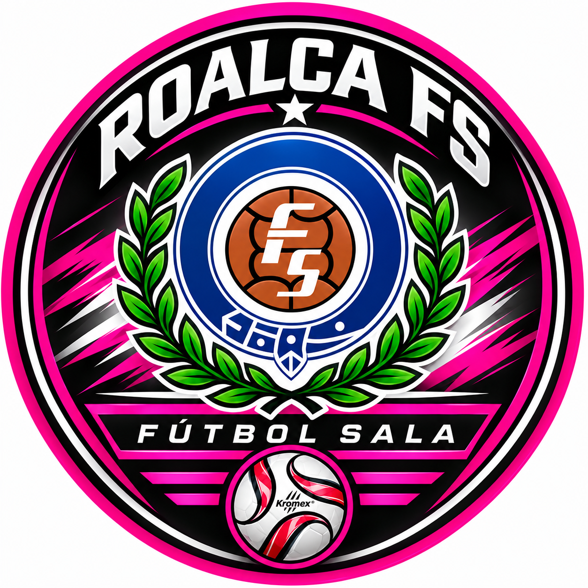

PRIMER EQUIPOA
ROALCA FS A
Competir cada partido, crecer juntos y luchar por nuestros objetivos.
VER PLANTILLA ↗
ROALCA FSCOSLADA · MADRID · DESDE 1998
Un escudo. Dos equipos. La misma pasión.
Roalca Fútbol Sala: pasión por este deporte, compromiso de equipo y orgullo de representar nuestros colores en cada jornada.
28 temporadas de fútbol sala, compañerismo y ganas de competir.
Dos vestuarios, una misma familia.
Competir cada partido, crecer juntos y luchar por nuestros objetivos.
VER PLANTILLA ↗Trabajo, ilusión y futuro para seguir haciendo grande al club.
VER PLANTILLA ↗Listado inicial; dorsales y disponibilidad pendientes de confirmación.
Listado inicial; dorsales y disponibilidad pendientes de confirmación.
Calendario, resultados y clasificación de nuestros equipos.
Estamos preparando el calendario y los resultados oficiales de Roalca A y Roalca B.
Goles · Asistencias · Tarjetas
El apoyo que nos ayuda a seguir creciendo.